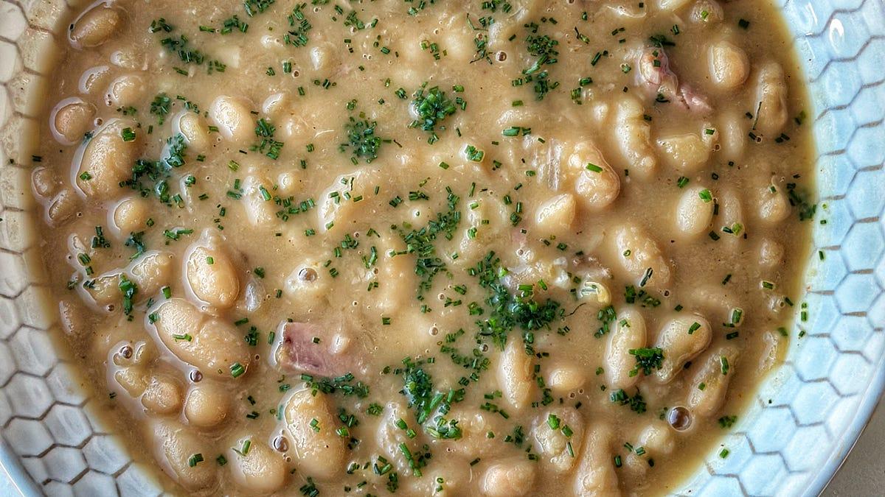

The Luxury of Simplicity

Two of the cheapest ingredients in the grocery store slowly transform into one of the richest, most satisfying bowls of food you can make. Tough smoked pork, humble dried beans, water, and time. The ham hocks simmer, releasing collagen, fat, and deep savory flavor into the broth while the beans soften and release their starch, thickening everything naturally.
After a couple of hours, what started as water and bones becomes something that coats the spoon like gravy. Think of this pot as a foundation — fold in roasted chicken, braised greens, pulled pork, spoon it under grilled sausage or steak, or let it thicken into a sauce.
| Ham hocks | ~$5 |
| Dried beans | ~$2 |
| Onion and garlic | ~$2 |
| Total | ~$9–10 |
Recipe by Andrew Gruel — American Gravy